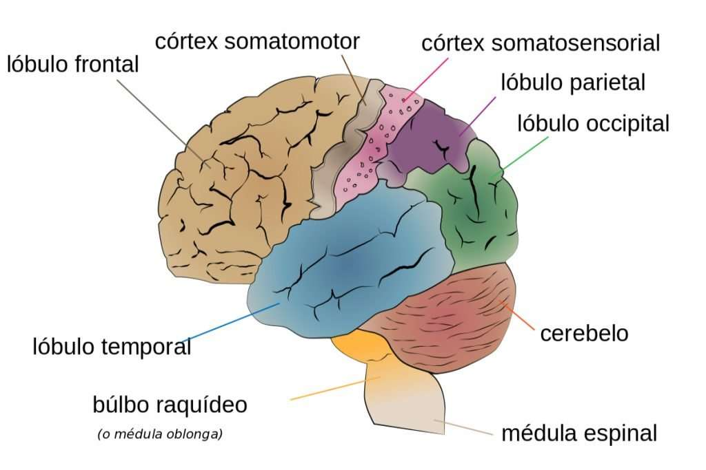

Mi mente
Lóbulo frontal: Es el lóbulo más grande del cerebro ubicado tras la frente.
Cobija al ‘director de orquesta’ del que hablábamos al principio encargándose de las funciones
ejecutivas: resolver problemas, control de los impulsos, planificación y razonamiento.
Lóbulo temporal: Se encuentran en los laterales del cerebro de forma horizontal y
pegados a las sienes. Tiene un importante papel vinculado a la memoria, así como al procesamiento
auditivo y del lenguaje

El lóbulo parietal ocupa cerca de un cuarto de los hemisferios cerebrales y tiene
dos funciones principales: 1) la sensibilidad y percepción y 2) la integración e interpretación
de la información sensitiva, en especial de los campos visuales.
Por ende, el lóbulo parietal es responsable, tanto de integrar la información sensitiva que
ingresa creando así una única percepción, como de formar un sistema de coordenadas espaciales
para representar nuestro entorno. Existe una gran variedad de manifestaciones clínicas como
consecuencia de una lesión en el lóbulo parietal, por ejemplo la incapacidad de comprender las
relaciones espaciales.